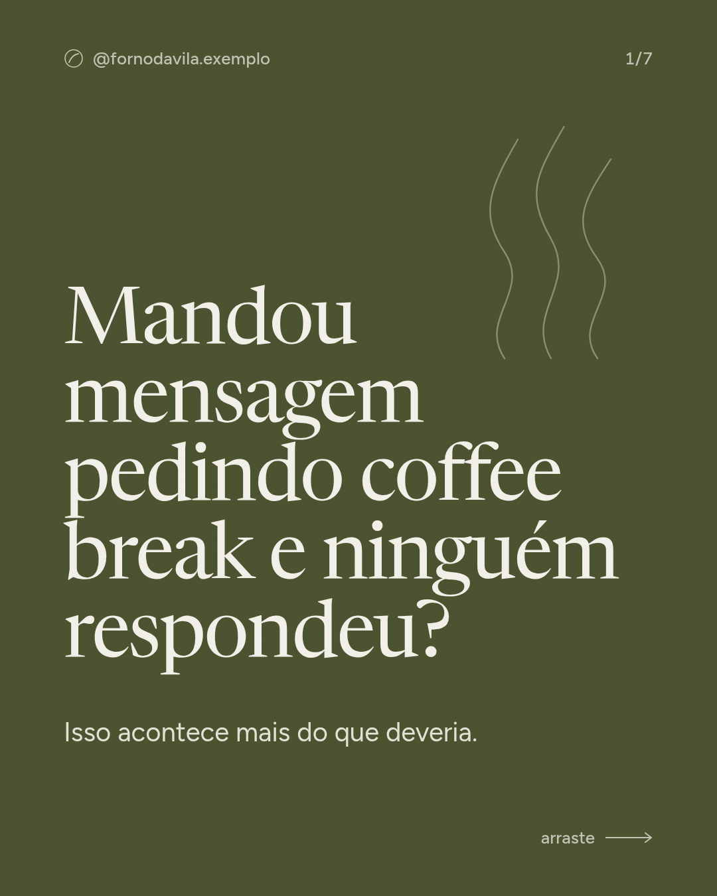
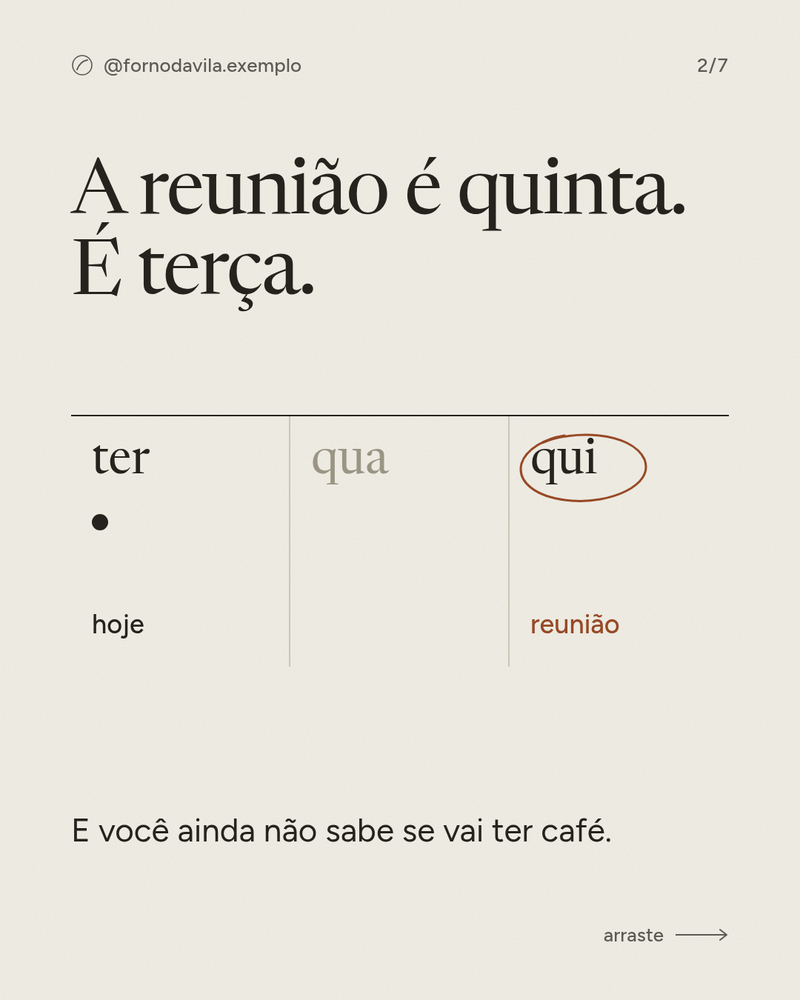
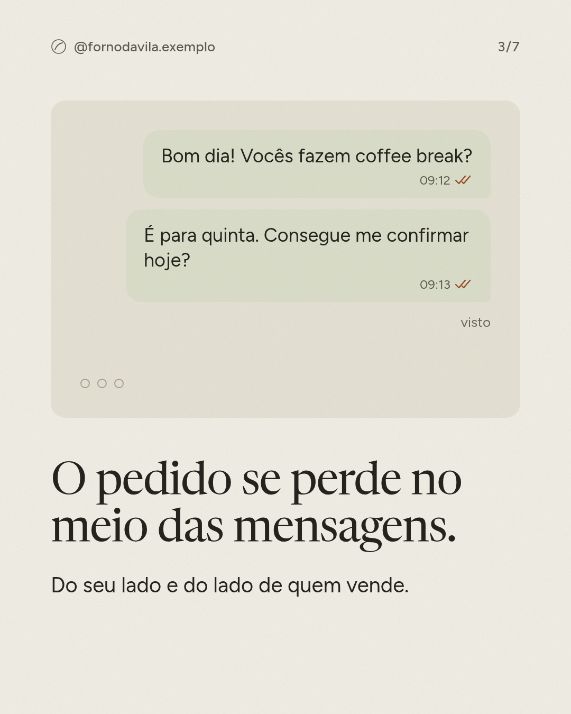
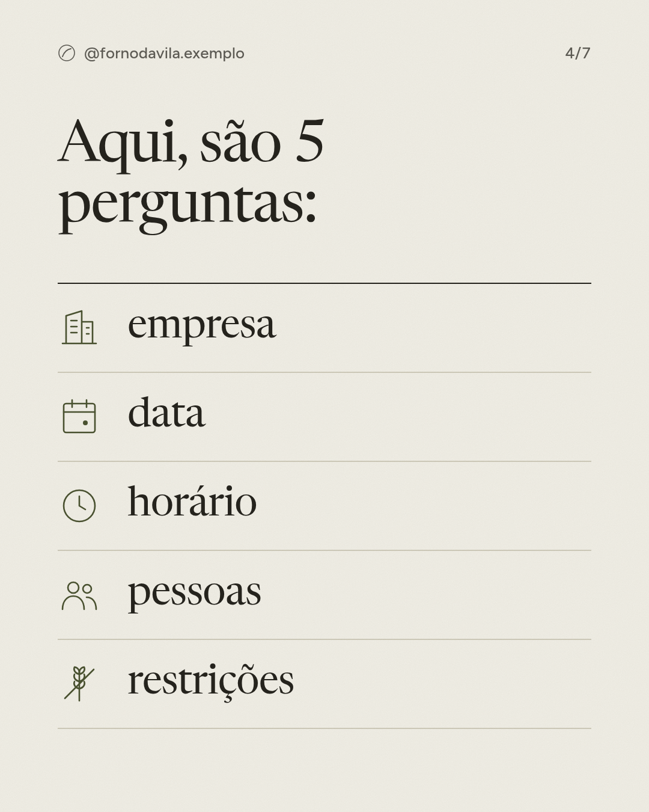
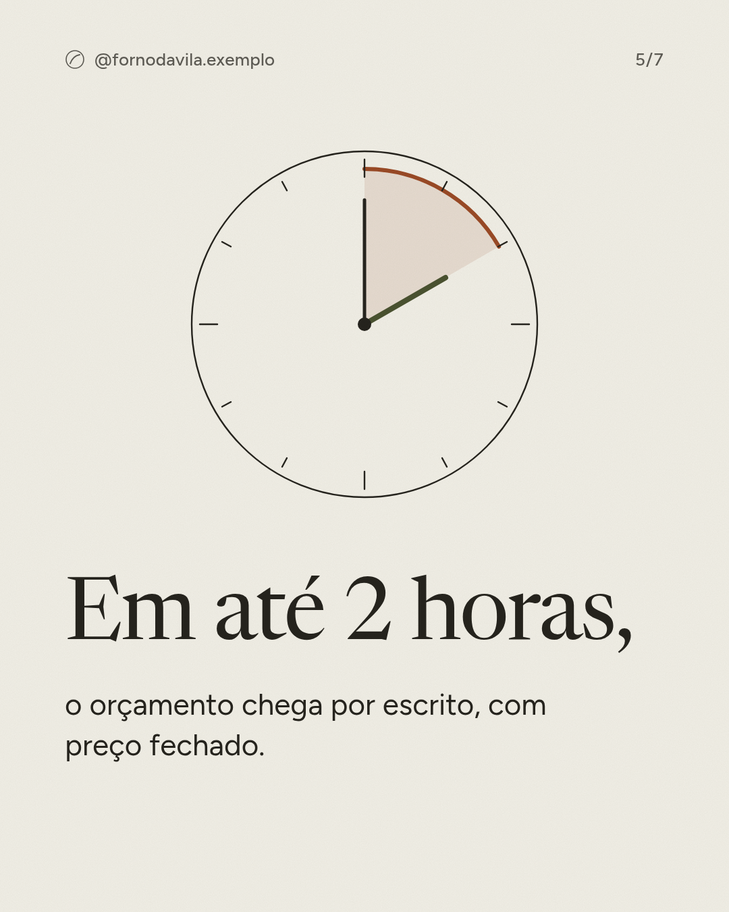
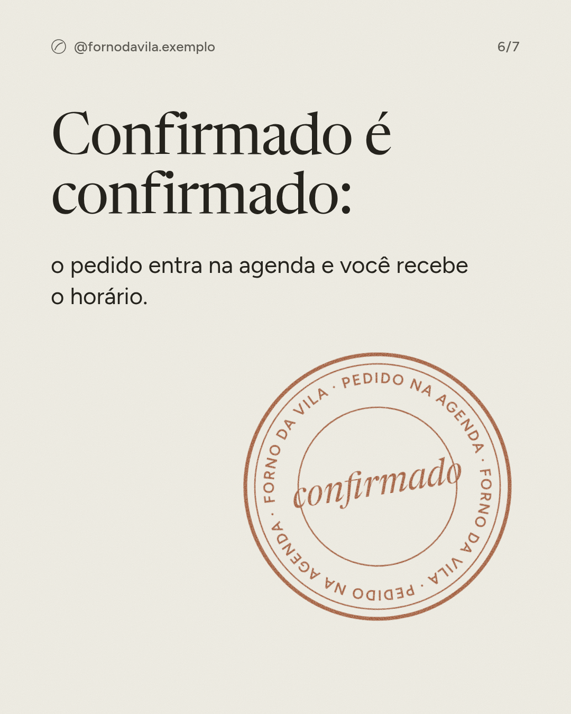
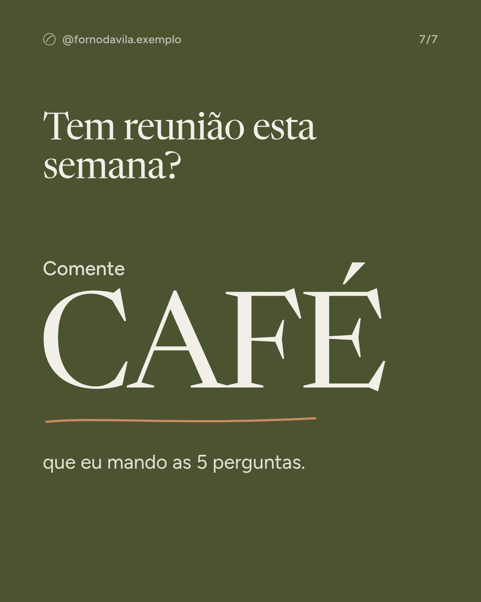

Um setor que cresce vendendo melhor, não para mais gente
Em 2025 o ticket médio das padarias subiu bem mais que o número de clientes. Pedido maior e organizado, como a encomenda para empresa, está do lado certo dessa curva.
R$ 164,12 bi
Faturamento da panificação e confeitaria no Brasil em 2025, 1,29% do PIB.
Quem compra o coffee break não quer pão bonito: quer certeza de que vai chegar
A compradora é quem organiza a reunião. A maior dor dela não é o preço, é não saber se o pedido foi confirmado.
Camila, 34 anos, administrativo ou RH
Trabalha numa empresa de 15 a 60 pessoas em Mogi das Cruzes. Organiza reuniões, treinamentos e aniversários do mês. Ela escolhe o fornecedor; o gestor aprova o valor. Procura com colegas, no Google e no Instagram, na véspera.
Quem parece cliente, mas não é
Quem quer coffee break para 200 pessoas com garçom e louça. Pede estrutura de buffet que a padaria não tem.
O caminho da Camila até o pedido, e onde ele quebra
PrecisaReunião marcada para a semana.
ProcuraPergunta a colegas, Google, Instagram.
Pede orçamentoWhatsApp pessoal do dono. A resposta demora.
Espera confirmaçãoNão sabe se vai ter café. Vai para o buffet.
RecebeQuando dá certo, o pão é elogiado.
O que dói (frases inventadas para a aula)
"Mandei mensagem na segunda e só me responderam na quinta. Tive que correr atrás de outro lugar."
Frase fictícia, exemplo de aula
"Reunião às 8h e o café chegou 8h40, com o cliente já sentado."
Frase fictícia, exemplo de aula
"Queria só uma ideia de valor para levar pro meu chefe, e ninguém passa sem eu mandar mil detalhes."
Frase fictícia, exemplo de aula
"Todo lugar manda o mesmo mini pão de queijo e o mesmo bolo seco."
Frase fictícia, exemplo de aula
Quando ela sai procurando e o que a segura
Gatilhos
Reunião com cliente importante na semana
Treinamento ou integração de gente nova
Aniversariantes do mês
Presente de fim de ano para clientes
O fornecedor antigo atrasou
Objeções e respostas
"Vocês vão demorar." Orçamento por escrito em até 2 horas.
"Padaria dá conta de 30 pessoas?" Com 48 horas de antecedência.
"O buffet é mais barato." Preço fechado, sem taxa surpresa.
Bastidores: como a IA conheceu a Camila
Cruzou o que o dono disse sobre quem compra com avaliações e comentários.
Copiou frases reais de clientes, com link. Aqui são inventadas porque a empresa é fictícia.
Desenhou o caminho até a compra e marcou em vermelho onde o cliente se perde.
O conceito: uma persona com frases reais vale mais que "público de 25 a 45 anos". A copy da página e dos posts sai dessas frases.
Faça na sua pasta:Quais são as 3 frases de cliente que mais aparecem em pesquisa/cliente.md? De onde veio cada uma?
Ninguém em Mogi junta pão bom com pedido rápido para empresa
Buffet tem estrutura e pão comum; quem faz pão bom não atende empresa. A Forno da Vila tem o melhor pão da lista e a vitrine mais fraca. Todos os concorrentes são fictícios.
Régua igual para todos: +1 site no celular · +1 preço fácil de achar · +1 prova social · +1 Instagram ativo · +1 aparece nas buscas de compra.
Lado a lado
Concorrente
Promessa
Diferencial
Preço
Prova
Forno da Vila
Pão de fermentação natural no bairro
Pão feito na casa
Encomenda R$ 180 a R$ 600
Google 4,8
A · Pão & Cia
"Tudo para o seu café"
Variedade e loja grande
Tabela no site
Google 4,3
B · Buffet Sabor & Evento
"Seu evento sem preocupação"
Garçom, louça e estrutura
A partir de R$ 45 por pessoa
Logos de clientes
C · Cestas Bom Dia
"Cesta que emociona"
Entrega no mesmo dia
R$ 150 a R$ 400
Avaliações na loja online
D · Padoca do Largo
"Pão quentinho toda hora"
Aberta das 6h às 22h
Não mostra
Google 4,1
E · Levain Caseiro
"Pão de fermentação natural por encomenda"
Produção pequena, retirada
Pão R$ 30
Comentários no Instagram
Espaços vazios
Coffee break de pão bom com orçamento em 2 horas
Resolve "não sei se foi confirmado". Ninguém promete prazo de resposta.
Preço fechado por tamanho
Resolve "ninguém passa o valor". Só um concorrente mostra tabela.
Coffee break que não é igual a todos
Resolve "sempre o mesmo mini pão de queijo".
Cesta de fim de ano de padaria
Presente para clientes. Hoje é território de floricultura.
Bastidores: como a IA montou o mapa
Achou 5 concorrentes nas buscas que o cliente faz.
Abriu o site de cada um e anotou promessa, preço e prova.
Escolheu 2 eixos que a compradora valoriza e posicionou todos.
Procurou o canto vazio e ligou cada espaço a uma dor da Camila.
O conceito:posicionamento não é ser melhor em tudo; é ocupar um lugar que ninguém ocupa. As notas aqui são julgamento da IA: por isso o selo de estimativa.
Vender certeza, não só pão: o coffee break com pedido confirmado em 2 horas
A oferta ocupa o espaço vazio nº 1 e ataca o gargalo que o dono já sente. hipótese a validar
Para pequenas empresas de Mogi das Cruzes, a Forno da Vila entrega coffee break com pão de fermentação natural feito na casa, com orçamento por escrito em até 2 horas.
Como funciona: Pedido Confirmado
5 perguntasEmpresa, data, horário, pessoas e restrições.
Orçamento em 2 horasPor escrito, com o que vai na mesa e o preço fechado.
ConfirmaçãoO pedido entra na agenda única e a cliente recebe o horário.
Mesa no horárioEntrega com 20 minutos de folga e foto da mesa montada.
O que vender
Principal: Coffee break da Vila
Para empresas de 10 a 40 pessoas. Três tamanhos: Reunião, Equipe e Treinamento. De R$ 180 a R$ 600 por pedido.
Entrada: orçamento em 2 horas
Grátis e sem compromisso. Derruba a objeção "vocês vão demorar".
Garantia
Se o café chegar depois do horário combinado, o próximo pedido sai com 10% de desconto. Só vale se a entrega sair com 20 minutos de folga: o Rafael confirma antes de prometer.
Bastidores: como a IA montou a oferta
Partiu do espaço vazio nº 1 e da dor nº 1 da Camila.
Deu nome ao método ("Pedido Confirmado"): 3 opções, escolheu 1.
Criou uma oferta de entrada para derrubar a objeção principal.
Marcou como hipótese: só vale se o Rafael consegue cumprir.
O conceito: a oferta não é o produto, é o que o cliente leva. A Camila não compra pão; compra não ter que correr atrás.
Um mês de posts que vende encomenda sem parecer anúncio
Um terço do mix fala de coffee break; o resto mostra o forno, a mesa pronta e o bairro. Instagram com uma cara só, como o dono queria.
fornodavila.exemplo







Quem organiza o café da reunião já tem tarefa demais para ainda correr atrás de confirmação. Aqui, você responde 5 perguntas no WhatsApp, recebe o orçamento fechado em até 2 horas e o pedido entra na nossa agenda. Comente CAFÉ e eu te mando as perguntas.
7 imagens de 1080 × 1350 prontas para postar em entregas/posts/
Os 4 pilares do mês
Coffee break sem susto35%Vender encomenda para empresa
Do forno30%Mostrar a fermentação natural
Mesa pronta20%Prova: mesas montadas e depoimentos
Vida no bairro15%Manter o balcão perto
Por que o carrossel tem esse arco
Gancho: a dor dita como ela diria.
Problema: a cena que ela reconhece.
Método: as 5 perguntas e o prazo.
Virada: "confirmado é confirmado".
Chamada: uma palavra para comentar.
Calendário de 4 semanas
Semana
Segunda
Quarta
Sexta
1
Coffee break sem correr atrás de confirmação carrossel
Por que o pão leva 24 horas reel
O pão de azeitona acaba às 9h post
2
Padarias crescem vendendo melhor post
Fermentação natural não é moda, é tempo carrossel
As 5 perguntas do nosso pedido reel
3
Uma mesa para 25 pessoas, montada carrossel
Casca, miolo e cheiro carrossel
WhatsApp organizado: o que mudou reel
4
Quanto pão por pessoa num coffee break carrossel
O que a cliente disse depois da reunião post
Cestas de fim de ano para empresas carrossel
Bastidores: como a IA fez os posts
Tirou os pilares das dores da Camila e dos espaços vazios.
Escreveu 12 pautas e montou o calendário.
Desenhou o carrossel em HTML com a marca, um layout por função da lâmina.
Exportou em PNG de 1080 × 1350, o tamanho do Instagram.
O conceito: o mesmo marca/marca.md que pintou a página pinta os posts. É assim que o Instagram "bagunçado" vira uma cara só.
Três passos para a primeira encomenda organizada desta semana
Na ordem: primeiro o caminho do pedido, depois a vitrine, depois a prova.
0 de 3 feitos
Colocar o formulário de pedido na bio e criar uma agenda única de encomendas Sem isso, cada pedido novo pode se perder como os antigos · /criar-pagina
Publicar a tabela de coffee break com 3 tamanhos e o carrossel 1 Hoje ninguém sabe que a padaria faz encomenda para empresa · /criar-conteudo
Levar a caixa-degustação a 10 escritórios do bairro e pedir avaliação a cada entrega Ocupa o espaço vazio nº 1 e cria a prova que falta · /mapear-concorrentes